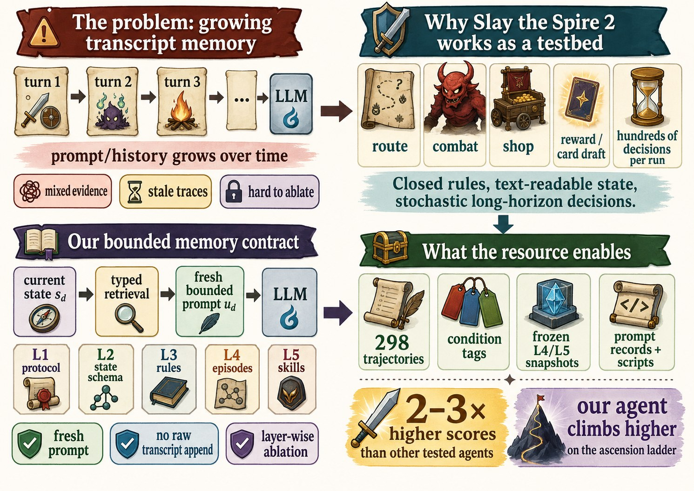
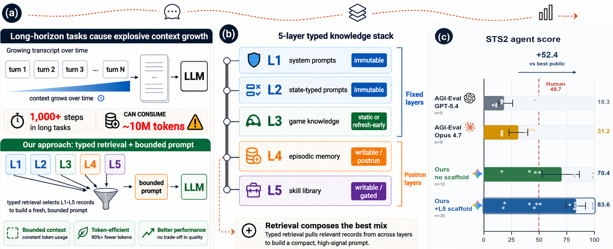
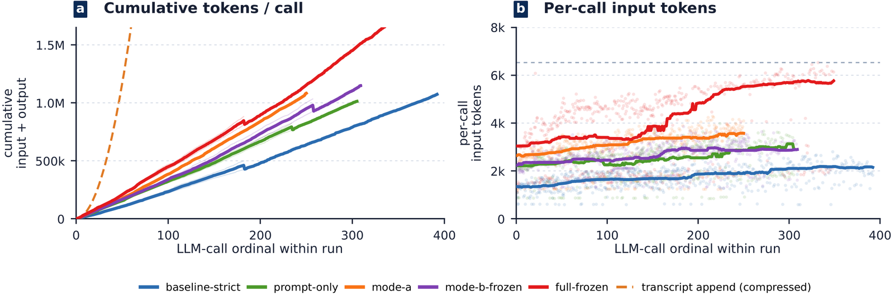
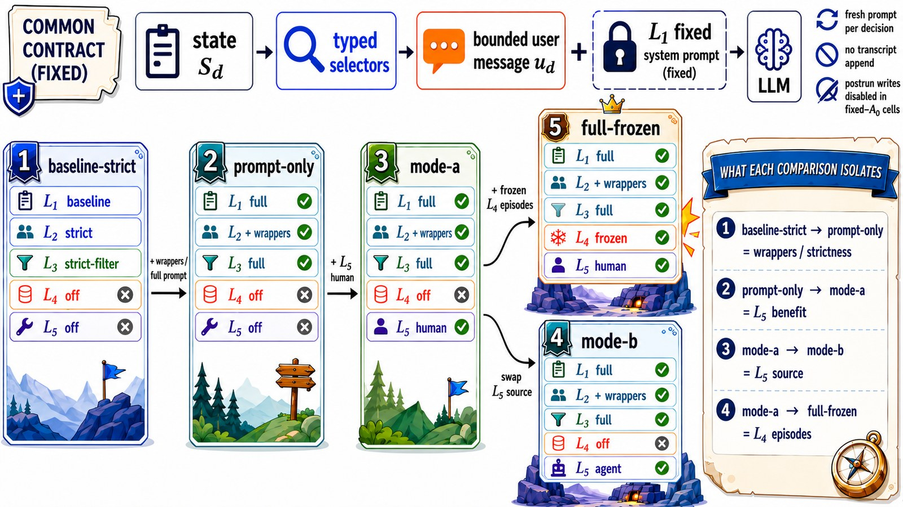
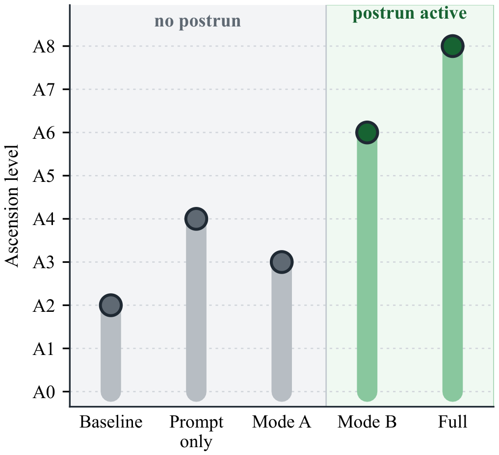
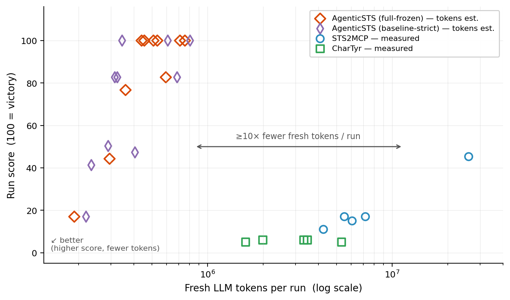

Memory for a long-horizon agent is a contract about what each future decision is allowed to see. AgenticSTS makes that contract bounded, typed, and ablatable — and releases a reproducible Silent A0 benchmark in Slay the Spire 2 where this design wins games that tested public transcript agents did not.

Unedited gameplay
The agent driving real runs — combat, elites and bosses, map routing, shops, events, rest sites, card rewards, and run outcomes.
Abstract
Most long-horizon LLM agents use the simplest memory contract: append everything — past observations, tool calls, reflections — to every prompt. Context grows without bound, stale traces re-enter decisions, and when the agent improves, no one can say which memory component did it.
AgenticSTS implements the opposite contract. Every decision is made from a fresh user message assembled by typed retrieval from five knowledge layers — no raw cross-decision transcript is ever appended. The prompt stays bounded across runs of any length, and any single layer can be ablated in isolation. We instantiate this in Slay the Spire 2, a closed-rule stochastic deck-building game whose runs demand hundreds of tactical and strategic decisions. The task is hard but unsaturated:
| Setting | A0 win rate |
|---|---|
| Frontier LLMs — public AGI-Eval benchmark, 5 configs | 0 wins (max defeat floor 33) |
| Human players — developer-reported, 240M community runs | 16% |
| AgenticSTS — bounded contract, no learned stores | 3/10 |
| AgenticSTS — bounded contract + triggered skills (L5) | 6/10 |
Method
Each decision prompt is composed as u_d = π(L1, L2(s), L3(s), L4(s), L5(s)). With capped top-k retrieval, prompt size is independent of run length — where a transcript interface grows unbounded.

| Layer | Contents | Mutability | Experimental role |
|---|---|---|---|
| L1 — operator prompts | Role + protocol templates per state type | Immutable | Fixed |
| L2 — state-typed prompts | Schemas & legal action formats (combat, deck, map, event…) | Immutable | Fixed / strictness toggle |
| L3 — game knowledge | Cards, relics, events, enemies, intents (patch-refreshed) | Static | Filterable |
| L4 — episodic memory | Postrun summaries (character × ascension × act × enemy) | Writable / postrun | On / off / frozen |
| L5 — skill library | Triggered strategic guides: explicit trigger + prose policy | Writable / gated | On / off / frozen / source-swapped |
Raw game logs are not used as similarity RAG — near-identical-looking states can have opposite strategic meanings (card order, relic combos, route history). The agent retrieves summaries and triggered guides, not nearest-neighbor log snippets. A dispatcher routes decisions to four model tiers (fast, strategic, analysis, evolution); four static system prompts stay cacheable while all per-run state lives in the user message — a median of 67 strategic LLM calls per run rather than one call per in-game action.

Results
A five-cell, fixed-A0 ablation isolates each scaffold. Because context reaches the model through named slots, prompt strictness, episodes, and skills switch on and off independently.

| Cell | L5 skills | L4 episodes | Wins | Mean score |
|---|---|---|---|---|
baseline-strict (no scaffold) | — | — | 3/10 | 70.4 |
prompt-only | — | — | 4/10 | 69.6 |
mode-a (hand-authored skills) | ✅ A | — | 6/10 | 85.5 |
mode-b-frozen (template-filled skills) | ✅ B | — | 6/10 | 83.3 |
full-frozen (skills + episodes) | ✅ A | ✅ | 6/10 | 82.1 |
In the released ladder, postrun-writable L4+L5 streams attempt ascension A6–A8; no-postrun streams stop at A2–A4. Applying the Gemini-trained stack to other backbones is a diagnostic probe, not a controlled transfer study — and it is backbone-sensitive.

| Backbone | Wins | Score | Δ% |
|---|---|---|---|
| Qwen 3.6-27B | 0/5 → 0/5 | 14.6 → 26.9 | +84.5 |
| DeepSeek V4-Pro | 0/5 → 0/5 | 41.3 → 33.8 | −18.1 |
| Gemini 3.1-Pro | 3/10 → 6/10 | 70.4 → 82.1 | +16.6 |
Both open-source StS2 agents re-send a single growing chat transcript on every decision. On Silent-A0 with the same strategic model for all agents, they win 0/5 each, need ~4× the wall-clock per floor, and spend 66–90× more fresh (non-cached) tokens per score point. Per-call prompts grow from ~9k toward ~500k tokens within one run; the bounded contract's stays flat.

RESULTS.md.
Citation
A preprint is on arXiv (arXiv:2607.02255) and Hugging Face Papers; the paper is also under EMNLP 2026 ARR review. If you use this testbed, the trajectories, or the bounded-contract design, please cite:
@article{agenticsts2026,
title = {AgenticSTS: A Bounded-Memory Testbed for Long-Horizon LLM Agents},
author = {Cheng, Xiangchen and Jiang, Yunwei and Sun, Jianwen and Li, Zizhen and Li, Chuanhao and Cao, Xiangcheng and Liu, Yihao and Zhang, Fanrui and Jin, Li and Zhang, Kaipeng},
year = {2026},
eprint = {2607.02255},
archivePrefix = {arXiv},
url = {https://arxiv.org/abs/2607.02255}
}